XEduHub功能详解
XEduHub是什么？
XEduHub是一个专为快速、便捷地利用最先进的深度学习模型完成任务而设计的工具库。其设计灵感源自PyTorchHub，旨在以工作流的方式，高效地完成深度学习任务。XEduHub的独特之处在于它内置了大量优质的深度学习SOTA模型，无需用户自行进行繁琐的模型训练。用户只需将这些现成的模型应用于特定任务，便能轻松进行AI应用实践。
想象一下，你的玩具箱里有很多玩具，每次想玩的时候，你只需要打开玩具箱，挑选你想要的玩具来玩。XEduHub就像是一个充满了AI玩具的箱子，里面有很多已经做好的AI模型，我们可以直接用它们来完成不同的任务。

XEduHub有多棒？
简单易用：就像玩玩具一样，不需要专业知识，只要按照指导，你就可以使用这些AI模型。
无需训练：你不需要自己制作玩具，里面的AI模型都已经为你准备好了。
节省时间：不需要等待，使用XEduHub，选取你需要的模型，然后就可以开始你的AI之旅。
解锁XEduHub的使用方法
XEduHub作为一个深度学习工具库，集成了许多深度学习领域优质的SOTA模型，能够帮助用户在不进模型训练的前提下，用少量的代码，快速实现计算机视觉、自然语言处理等多个深度学习领域的任务。
一般使用步骤是：
步骤1：安装并导入XEduHub库
步骤2：选择你的AI玩具
步骤3：使用AI玩具
有了模型，你就可以使用它来完成你的任务啦！
# 步骤一：导入库
from XEdu.hub import Workflow as wf
# 步骤二：选择你的AI玩具
face = wf(task="face") # 实例化模型
# 步骤三：使用你的AI玩具
img = 'face.jpg'
# 进行推理，同时返回结果和带标注的图片
result,new_img = face.inference(data=img,img_type='cv2')
print(result) # 输出推理结果
face.show(new_img) # 显示带标注图片
一旦你安装好XEduHub并导入到代码中后，你就可以查看里面所有的AI模型。看看哪一个是你想要的，然后选择它！下文会为你分任务解读。示例代码如下：
from XEdu.hub import Workflow as wf
# 目前支持的任务
wf.support_task()
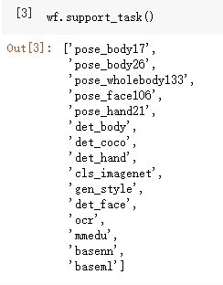
内置任务
XEduHub内置多个深度学习领域优质的SOTA模型，支持多种类型的内置任务。
方向一：关键点识别
关键点识别是深度学习中的一项关键任务，旨在检测图像或视频中的关键位置，通常代表物体或人体的重要部位。
1. 模型声明
在第一次声明模型时代码运行用时较长，是因为要将预训练模型从云端下载到本地中，从而便于用户进行使用。
你可以在当前项目中找到名为checkpoints的文件夹，里面保存的就是下载下来的预训练模型。当代码运行时，会先在本地的同级目录中寻找是否有已下载的预训练模型，如果没有，到本地缓存中寻找，如果本地缓存没有，查看是不是指定了模型的路径，如果都没有，到网络下载。
人体关键点
人体关键点识别是一项计算机视觉任务，旨在检测和定位图像或视频中人体的关键位置，通常是关节、身体部位或特定的解剖结构。
这些关键点的检测可以用于人体姿态估计和分类、动作分析、手势识别等多种应用。
XEduHub提供了两个识别人体关键点的优质模型，能够在使用cpu推理的情况下，快速识别出身体的关键点。
body17和body26 数字表示了识别出人体关键点的数量。
声明代码如下：
body = wf(task='body') # 数字可省略，当省略时，默认为body17
body17模型能识别出17个人体骨骼关键点，示意图如下，你可以根据自己的需要选择其中的特定的关键点进行后续的处理。
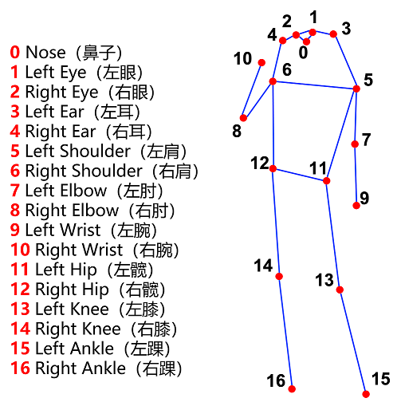
body26模型能识别出26个人体骨骼关键点，与body17相比，示意图如下，你可以根据自己的需要选择其中的特定的关键点进行后续的处理。
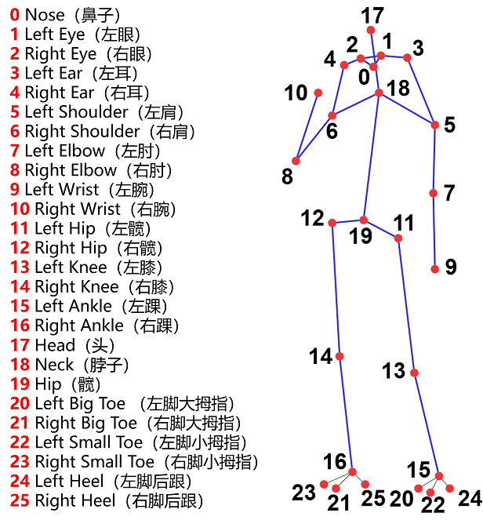
人脸关键点
人脸关键点识别是计算机视觉领域中的一项任务，它的目标是检测和定位人脸图像中代表面部特征的重要点，例如眼睛、鼻子、嘴巴、眉毛等。这些关键点的准确定位对于许多应用非常重要，包括人脸识别、表情分析、虚拟化妆、人机交互等。
XEduHub提供了识别人脸关键点的模型：face106，这意味着该模型能够识别人脸上的106个关键点。如下图所示是106个关键点在脸部的分布情况，我们可以利用这些关键点的分布特征进行人脸识别，或者对人的表情进行分析和分类等。
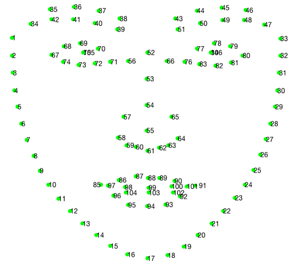
声明代码如下：
face = wf(task='face') # 数字可省略，默认为face106
人手关键点
人手关键点识别是一项计算机视觉任务，其目标是检测和定位图像或视频中人手的关键位置，通常包括手指、手掌、手腕等关键部位的位置。这些关键点的识别对于手势识别、手部姿态估计、手部追踪、手势控制设备等应用具有重要意义。
XEduHub提供了能够快速识别人手关键点的模型：hand21，该模型能够识别人手上的21个关键点，如下图所示。你可以根据自身需要对关键点进行进一步处理。例如：手势的不同会体现在关键点位置的分布上，这样就可以利用这些关键点进行手势的分类和识别。
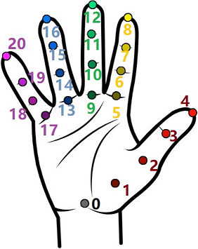
声明代码如下：
hand = wf(task='hand') # 数字可省略，默认为hand21
人体所有关键点
XEduHub提供了识别人体所有关键点，包括人手、人脸和人体躯干部分关键点的模型：wholebody133。具体关键点的序号及其分布如下图所示：

声明代码如下：
wholebody = wf(task='wholebody') # 数字可省略，默认为wholebody133
2. 模型推理
由于已经从云端下载好了预训练的SOTA模型，因此只需要传入相应图片即可进行模型推理任务，识别相应的关键点，以人体关键点识别为例，模型推理代码如下：
img = "data/body.jpg" # 指定待识别关键点的图片的路径
keypoints,img_with_keypoints = body.inference(data=img,img_type='pil') # 进行模型推理
keypoints以三维数组的形式保存了所有关键点的坐标，每个关键点(x,y)被表示为[x,y]根据前面的图示，要获取到某个特定序号i的关键点，只需要访问keypoints[0][i]即可。
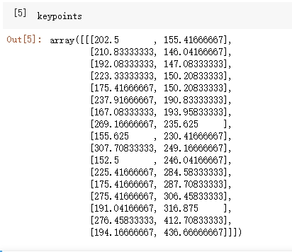
img_with_keypoints是个三维数组，以pil格式保存了关键点识别完成后的图片。
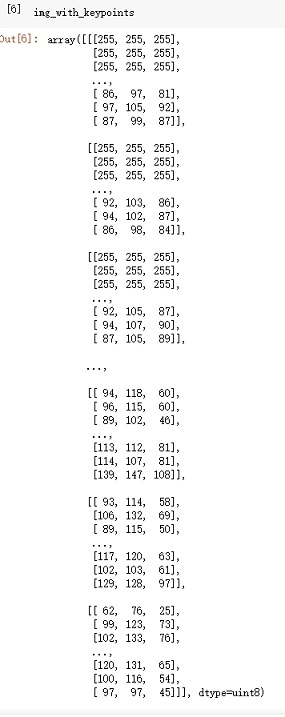
inference()可传入参数：
data: 指定待识别关键点的图片。show: 可取值：[true,false]默认为false。如果取值为true，在推理完成后会直接输出关键点识别完成后的图片。img_type: 关键点识别完成后会返回含有关键点的图片，该参数指定了返回图片的格式，可选有:['cv2','pil']，默认值为None，如果不传入值，则不会返回图。bbox：该参数可配合目标检测使用。在多人关键点检测中，该参数指定了要识别哪个检测框中的关键点。
3. 结果输出
XEduHub提供了一种便捷的方式，能够以标准美观的格式查看关键点坐标以及分数（可以理解为置信度），代码如下：
format_result = body.format_output(lang='zh')# 参数language设置了输出结果的语言
format_result以字典形式存储了推理结果，共有两个键：关键点坐标和分数。关键点坐标以二维数组形式保存了每个关键点的[x,y]坐标，而分数则是对应下标的关键点的置信度，以一维数组形式保存。
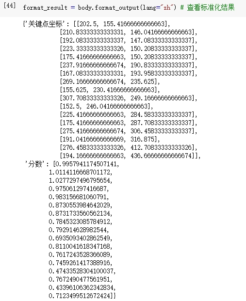
显示带有关键点和关键点连线的结果图像
body.show(img_with_keypoints)
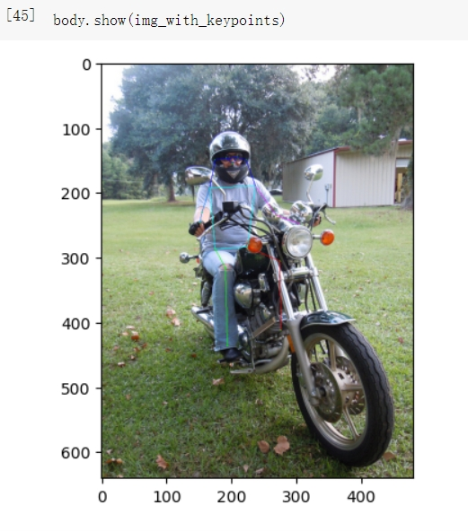
4. 结果保存
XEduHub提供了保存带有关键点和关键点连线结果图像的方法，代码如下：
body.save(img_with_keypoints,'img_with_keypoints.jpg')
5.完整代码
from XEdu.hub import Workflow as wf
body = wf(task='body') # 数字可省略，当省略时，默认为body17
img = "data/body.jpg" # 指定待识别关键点的图片的路径
keypoints,img_with_keypoints = body.inference(data=img,img_type='pil') # 进行模型推理
format_result = body.format_output(lang='zh')# 参数language设置了输出结果的语言
body.show(img_with_keypoints)
body.save(img_with_keypoints,'img_with_keypoints.jpg')
方向二：目标检测
目标检测是一种计算机视觉任务，其目标是在图像或视频中检测并定位物体的位置，并为每个物体分配类别标签。
实现目标检测通常包括特征提取、物体位置定位、物体类别分类等步骤。这一技术广泛应用于自动驾驶、安全监控、医学影像分析、图像搜索等各种领域，为实现自动化和智能化应用提供了关键支持。
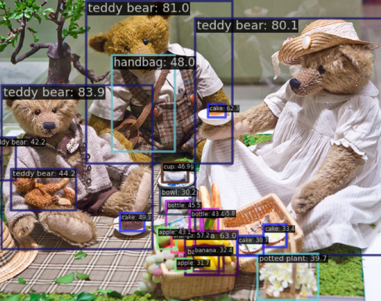
1. 模型声明
在第一次声明模型时代码运行用时较长，是因为要将预训练模型从云端下载到本地中，从而便于用户进行使用。
你可以在当前项目中找到名为checkpoints的文件夹，里面保存的就是下载下来的预训练模型。
人体目标检测
人体目标检测的任务是在图像或视频中检测和定位人体的位置，并为每个检测到的人体分配一个相应的类别标签。
XEduHub提供了进行人体目标检测的模型：bodydetect，该模型能够进行单人的人体目标检测。
声明代码如下：
body_det = wf(task='bodydetect')
coco目标检测
COCO（Common Objects in Context）是一个用于目标检测和图像分割任务的广泛使用的数据集和评估基准。它是计算机视觉领域中最重要的数据集之一，在XEduHub中的该模型能够检测出80类coco数据集中的物体：cocodetect，声明代码如下:
coco_det = wf(task='cocodetect')
若要查看coco目标检测中的所有类别可运行以下代码：
wf.coco_class()
人脸检测
人脸检测指的是检测和定位一张图片中的人脸。XEduHub使用的是opencv的人脸检测模型，能够快速准确地检测出一张图片中所有的人脸。
需要注意的是由于使用的为opencv的人脸检测模型，因此在format_output时缺少了分数这一指标。
声明代码如下：
face_det = wf(task='facedetect')
手部检测
手部检测指的是检测和定位一张图片中的人手。XEduHub采用的是MMPose框架中rtmpose中的手部检测模型，能够快速准确地检测出图片中的所有人手
声明代码如下：
hand_det = wf(task="handdetect")
2. 模型推理
由于已经从云端下载好了预训练的SOTA模型，因此只需要传入相应图片即可进行模型推理任务，实现目标检测。以人体目标检测为例，模型推理代码如下：
img = 'data/body.jpg'
result,img_with_box = body_det.inference(data=img,img_type='cv2')
result以二维数组的形式保存了检测框左上角顶点的(x,y)坐标以及检测框的宽度w和高度h（之所以是二维数组，是因为该模型能够检测多个人体，因此当检测到多个人体时，就会有多个[x,y,w,h]的一维数组，所以需要以二维数组形式保存），我们可以利用这四个数据计算出其他三个顶点的坐标。
img_with_box是个三维数组，以cv2格式保存了包含了检测框的图片。
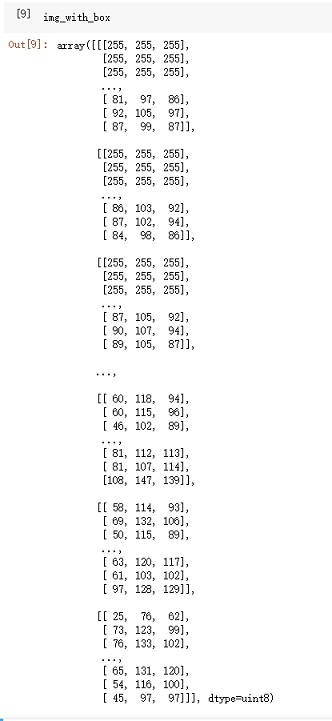
body_det.inference()可传入参数：
data：指定待检测的图片。show: 可取值：[true,false]默认为false。如果取值为true，在推理完成后会直接输出目标检测完成后的图片。img_type：目标检测完成后会返回含有检测框的图片，该参数指定了返回图片的格式，可选有:['cv2','pil']，默认值为None，如果不传入值，则不会返回图。target_class：该参数在使用cocodetect的时候可以指定要检测的对象，如：person，cake等等。thr: 设置检测框阈值，超过该阈值的检测框被视为有效检测框，进行显示。
3. 结果输出
XEduHub提供了一种便捷的方式，能够以标准美观的格式查看检测框位置信息、检测分数以及目标的分类类别。
format_result以字典形式存储了推理结果，共有三个键：检测框、分数和类别。检测框以二维数组形式保存了每个检测框的坐标信息[x,y,w,h]，而分数则是对应下标的检测框的置信度，以一维数组形式保存，类别则是检测框中对象所属的类别，以一维数组形式保存。
代码如下：
format_result =body_det.format_output(lang='zh')# 参数language设置了输出结果的语言
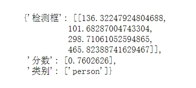
显示带有检测框的图片
body_det.show(img_with_box)
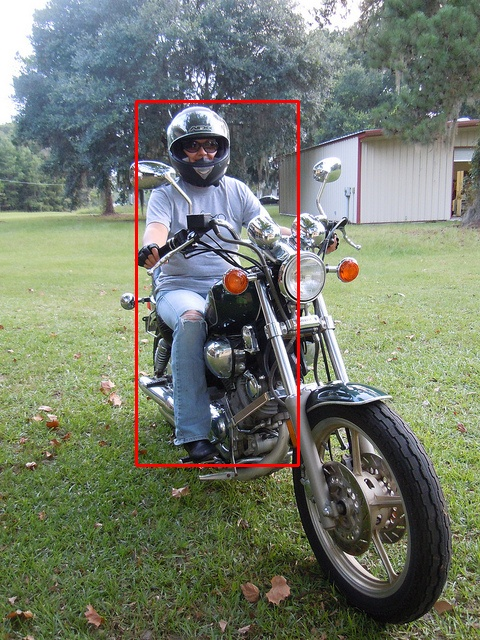
4. 结果保存
XEduHub提供了保存带有检测框图片的方法，代码如下：
body_det.save(img_with_box,'img_with_box.jpg')
5. 完整代码
from XEdu.Hub import Workflow as wf
body_det = wf(task='bodydetect')
img = 'data/body.jpg'
result,img_with_box = body_det.inference(data=img,img_type='cv2')
format_result =body_det.format_output(lang='zh')# 参数language设置了输出结果的语言
body_det.show(img_with_box)
body_det.save(img_with_box,'img_with_box.jpg')
方向三：光学字符识别（OCR）
光学字符识别（Optical Character Recognition, OCR）是一项用于将图像或扫描的文档转换为可编辑的文本格式的技术。
OCR技术能够自动识别和提取图像或扫描文档中的文本，并将其转化为计算机可处理的文本格式。
OCR技术在车牌识别、证件识别、文档扫描、拍照搜题等多个场景有着广泛应用。
1. 模型声明
XEduHub使用的OCR模型是来自百度的开源免费的OCR模型：rapidocr，这个模型运行速度快，性能优越，小巧灵活，并且能支持超过6000种字符的识别，如简体中文、繁体中文、英文、数字和其他艺术字等等。
注意：你可以在当前项目中找到名为font的文件夹，里面的FZVTK.TTF文件是一种字体文件，为了显示识别出的文字而使用。
声明代码如下：
ocr = wf(task="ocr")
2. 模型推理
只需要传入相应图片即可进行字符识别。模型推理代码如下：
img = 'data/ocr.jpg'
result,ocr_img = ocr.inference(data=img,img_type='cv2')
result以一维数组的形式保存了识别出的文本及其检测框的四个顶点(x,y)坐标.
如图所示，数组中每个元素的形式为元组：（识别文本，检测框顶点坐标）。四个顶点坐标顺序分别为[左上，右上，左下，右下]。
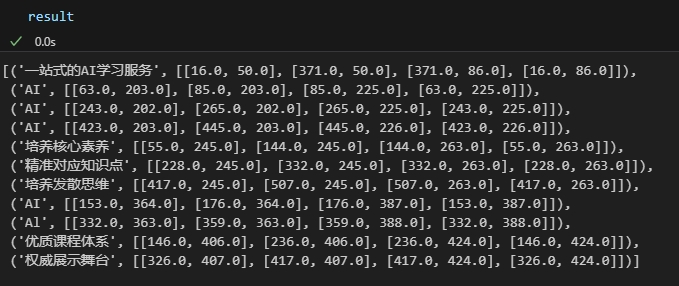
ocr_img的格式为cv2，如下图所示
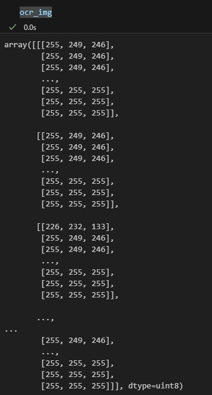
ocr.inference()可传入参数：
data：指定待识别的图片。show: 可取值：[true,false]默认为false。如果取值为true，在推理完成后会直接输出OCR完成后的图片。img_type：目标检测完成后会返回含有检测框的图片，该参数指定了返回图片的格式，可选有:['cv2','pil']
3. 结果输出
XEduHub提供了一种便捷的方式，能够以标准美观的格式查看检测框位置信息、分数以及识别出的文本。
format_output的结果以字典形式存储了推理结果，共有三个键：检测框坐标、分数和文本。检测框坐标以三维数组形式保存了每个检测框的四个顶点的[x,y]坐标，而分数则是对应下标的检测框的置信度，以一维数组形式保存。文本则是每个检测框中识别出的文本，以一维数组形式保存。
代码如下：
ocr_format_result = ocr.format_output(lang="zh")

显示结果图片：由两部分组成，左侧为原图片，右侧为经过ocr识别出的文本，并且该文本的位置与原图片中文本的位置保持对应。
ocr.show(ocr_img)
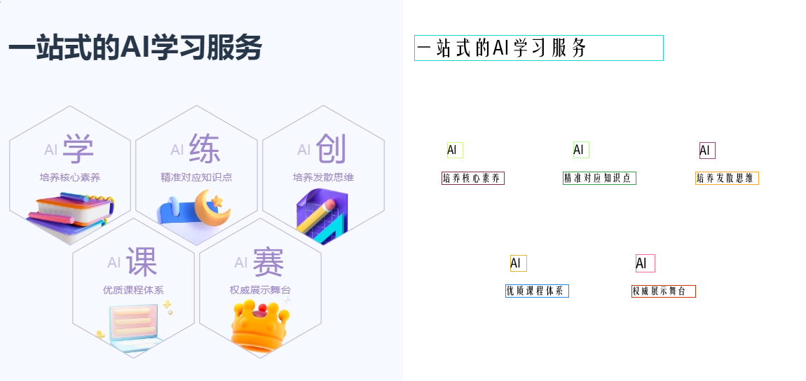
4. 结果保存
XEduHub提供了保存OCR识别后的图片的方法，代码如下：
ocr.save(ocr_img,"ocr_img.jpg")
5. 完整代码
from XEdu.Hub import Workflow as wf
ocr = wf(task="ocr")
img = 'data/ocr.jpg'
result,ocr_img = ocr.inference(data=img,img_type='cv2')
ocr_format_result = ocr.format_output(lang="zh")
ocr.show(ocr_img)
ocr.save(ocr_img)
外置任务
XEduHub除了内置多个深度学习领域优质的SOTA模型，支持多种类型的内置任务，同时也支持指定外置任务，如MMEdu、BaseNN。
基于MMEdu导出模型推理
XEduHub现在可以支持使用MMEdu导出的onnx模型进行推理啦！如果你想了解如何将使用MMEdu训练好的模型转换成ONNX格式，可以看这里最后一步：AI模型转换。OK，准备好了ONNX模型，那么就开始使用XEduHub吧！
1. 模型声明
与外置任务的模型声明不同之处在于：task和checkpoint的设置。首先，你只需要设置task为”mmedu”，而不需要指定是哪种任务；其次，你需要指定你的模型的路径，并传入到checkpoint参数。这里我们以猫狗分类模型为例，项目指路：猫狗分类。
mmedu = wf(task="mmedu",checkpoint="cat_dogs.onnx")
2. 模型推理
在完成模型声明后，传入待推理的数据即可完成推理。
img = 'cat.jpg'
result, new_img = mmedu.inference(data=img,img_type="pil",show=True)
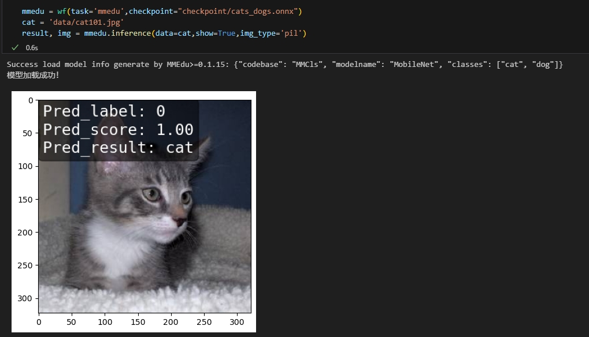
mmedu.inference可传入参数：
data：指定待检测的图片。show: 可取值：[true,false]默认为false。如果取值为true，在推理完成后会直接输出目标检测完成后的图片。img_type：目标检测完成后会返回含有检测框的图片，该参数指定了返回图片的格式，可选有:['cv2','pil']，默认值为None，如果不传入值，则不会返回图。
result和img是模型推理后返回的推理结果。
result结果如下图所示，是一个一维数组，这代表着每个分类标签的置信度，第一个元素是这张图片为猫的置信度，第二个元素是这张图片为狗的置信度，显然，这张图片为猫的置信度接近100%，自然这张图片被分类为猫。
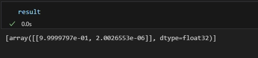
img结果是打上分类标签和分数的原图片，在这里以数字化的方式（三维数组）呈现。
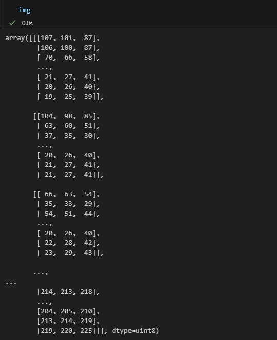
3. 结果输出
XEduHub提供了一种便捷的方式，能够以标准美观的格式查看输出结果。
format_result = mmedu.format_output(lang="zh")
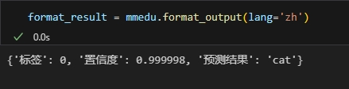
format_result以字典形式保存了模型的推理结果，包括所属标签、置信度、以及预测结果。
显示结果图片：与原图相比，结果图片在左上角多了pred_label, pred_socre和pred_class三个数据，对应着标签、置信度和预测结果。
mmedu.show(new_img,"mmedu_img.jpg")
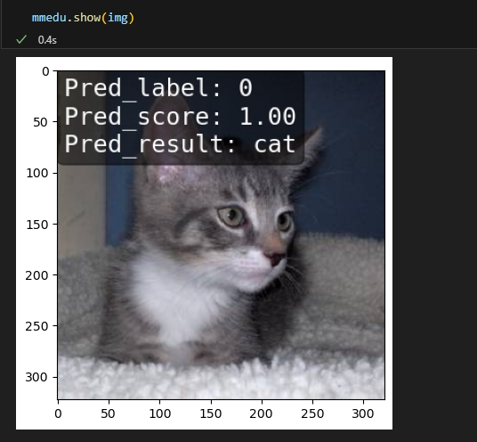
4. 结果保存
XEduHub提供了保存MMEdu模型推理后的图片的方法，代码如下：
mmedu.save(img,'new_cat.jpg')
5. 指定其他
XEduHub提供了保存MMEdu模型推
如果此时你有冲动去使用MMEdu完成模型训练到推理，再到转换与应用，快去下文学习MMEdu的相关使用吧！
基于BaseNN导出模型推理
XEduHub现在可以支持使用BaseNN导出的onnx模型进行推理啦！如果你想了解如何将使用BaseNN训练好的模型转换成ONNX格式，可以看这里：BaseNN模型文件格式转换。OK，准备好了ONNX模型，那么就开始使用XEduHub吧！
1. 模型声明
与MMEdu一样，在模型声明时你只需要设置task为”basenn”，而不需要指定是哪种任务；其次，你需要指定你的模型的路径，并传入到checkpoint参数。
basenn = wf(task="basenn",checkpoint="basenn.pth")
2. 模型推理
img = '6.jpg'
result = base.inference(data=img)
result结果如下图所示，是一个一维数组，这代表着每个分类标签的概率。显然可以看到数字为6的标签的置信度最高，是1.0。

mmedu.inference可传入参数：
data：指定待检测的图片。show: 可取值：[true,false]默认为false。如果取值为true，在推理完成后会直接输出目标检测完成后的图片。img_type：目标检测完成后会返回含有检测框的图片，该参数指定了返回图片的格式，可选有:['cv2','pil']，默认值为None，如果不传入值，则不会返回图。
**注意！**基于BaseNN模型推理结果不包含图片！因为大部分使用BaseNN解决的任务只需要输出分类标签、文本或者数组数据等。
3. 结果输出
XEduHub提供了一种便捷的方式，能够以标准美观的格式查看输出结果。
format_output = basenn.format_output(lang='zh')
format_result以字典形式保存了模型的推理结果，包括预测结果，分数（置信度）。
如果此时你有冲动去使用BaseNN完成模型训练到推理，再到转换与应用，快去下文学习BaseNN的相关使用吧！
基于用户自定义模型推理
即将上线，敬请期待！
多元AI模型综合应用
借助XEduHub可以实现应用多元AI模型去解决复杂的问题。
实时人体关键点识别
以下代码可以实时检测摄像头中出现的多个人，并对每一个人体提取关键点。
具体实现方式为：我们首先将实时视频中每一帧的图像进行人体目标检测，拿到所有的检测框bbox及其坐标信息，绘制检测框。随后对每个检测框中的人体进行关键点提取。
from XEdu.hub import Workflow as wf
import cv2
cap = cv2.VideoCapture(0)
body = wf(task='body17')# 实例化pose模型
det = wf(task='bodydetect')# 实例化detect模型
while cap.isOpened():
ret, frame = cap.read()
if not ret:
break
bboxs = det.inference(data=frame,thr=0.3)
img = frame
for i in bboxs:
keypoints,img =body.inference(data=img,img_type='cv2',bbox=i)
for [x1,y1,x2,y2] in bboxs: # 画检测框
cv2.rectangle(img, (int(x1),int(y1)),(int(x2),int(y2)),(0,255,0),2)
cv2.imshow('video', img)
if cv2.waitKey(1) & 0xFF == ord('q'):
break
cap.release()
cv2.destroyAllWindows()
拓展：视频中的人体关键点识别
该项目可以识别视频中出现的人体的关键点。
具体实现方式与上面的代码类似，区别就是从摄像头的实时视频流变成了本地的视频流，对视频每一帧的操作不变。最后，我们还需要将处理好的每一帧的图片再合成为视频。
在这里我们将这个任务分成两步：Step1: 利用关键点识别处理视频的每一帧并保存到本地；Step2: 将本地的视频帧合成为视频。
Step1的代码：
# STEP1: 利用关键点识别处理视频的每一帧并保存到本地
import cv2
from XEdu.hub import Workflow as wf
import os
video_path = "data/eason.mp4" # 指定视频路径
output_dir = 'output/' # 指定保存位置
body = wf(task='body17')# 实例化pose模型
det = wf(task='bodydetect')# 实例化detect模型
cap = cv2.VideoCapture(video_path)
frame_count = 0 # 视频帧的数量
while True:
ret, frame = cap.read()
if not ret:
print('Video read complete!')
break
frame_count += 1
frame_file_name = f'{output_dir}frame_{frame_count:04d}.jpg' # 每一张帧图片的名称
bboxs = det.inference(data=frame,thr=0.3)
img = frame
for i in bboxs:
keypoints,img =body.inference(data=img,img_type='cv2',bbox=i)
for [x1,y1,x2,y2] in bboxs: # 画检测框
cv2.rectangle(img, (int(x1),int(y1)),(int(x2),int(y2)),(0,255,0),2)
cv2.imshow('video', img)
body.save(img,frame_file_name)
if cv2.waitKey(1) & 0xFF == ord('q'):
break
cap.release()
Step2的代码：
import cv2
import os
output_video_path = 'output_video.mp4' # 指定合成后视频的名称
output_dir = 'output/' # 指定本地的帧图片的路径
# 获取推理结果文件列表
result_files = sorted([os.path.join(output_dir, f) for f in os.listdir(output_dir) if f.endswith('.jpg')])
# 获取第一张图像的尺寸
first_frame = cv2.imread(result_files[0])
frame_height, frame_width, _ = first_frame.shape
# 设置视频编码器和输出对象
fourcc = cv2.VideoWriter_fourcc(*'mp4v') # 使用 mp4 编码器
out = cv2.VideoWriter(output_video_path, fourcc, 30, (frame_width, frame_height)) # 30 是帧率
print('开始合成视频...')
for image_path in result_files:
img = cv2.imread(image_path)
out.write(img)
out.release()
print('视频合成完毕，已保存到：', output_video_path)
多人脸关键点识别
以下代码可以将一张图片中所有的人脸识别出来，并对每一张脸提取关键点。这可以用于对一张图片中的所有人进行表情分类，推测情感等。
具体实现方式为：我们首先使用facedetect进行人脸检测，拿到所有的检测框bbox。随后对每个检测框中的人脸进行关键点提取。
from XEdu.hub import Workflow as wf
face_det = wf(task='facedetect')
face_kp = wf(task='face')
bboxs,img = face_det.inference(data='face.jpg',img_type='cv2')
for i in bboxs:
keypoints,img = face_kp.inference(data=img,img_type='cv2',bbox=i)
face_kp.show(img)
人脸检测控制舵机方向
以下代码可以运行在Arduino开发板上，实现通过跟随人脸位置来控制舵机方向。具体实现方式为：通过人脸检测模型得到人脸检测框的坐标并计算x轴方向的中心点，根据中心点的位置判断是左转还是右转。通过pinpong库控制舵机的转向。
import cv2
from pinpong.board import Board, Pin, Servo
import numpy as np
from XEdu.hub import Workflow as wf
import time
Board('uno').begin() # 指定Arduino开发板，自动识别COM口
det = wf(task='facedetect') # 加载人脸检测模型
ser = Servo(Pin(Pin.D4)) # 初始化舵机，指定舵机接口为D4
cap = cv2.VideoCapture(0) # 打开摄像头
while cap.isOpened():
ret, frame = cap.read()
x = 300 # 初始化人脸中心点的x坐标
if not ret:
break
result,img = det.inference(data=frame,img_type='cv2',thr=0.3) # 在CPU上进行推理
if result is not None and len(result) > 0:
x = int((result[0][2]+result[0][0])/2) # 计算人脸中心点的x坐标
print(x)
if x > 400: # 根据人脸中心点的x坐标控制舵机转动,大于400向左转
time.sleep(0.05)
ser.write_angle(0)
print('left')
elif x < 200: # 根据人脸中心点的x坐标控制舵机转动，小于200向右转
time.sleep(0.05)
ser.write_angle(180)
print('right')
cv2.imshow('video', img)
if cv2.waitKey(1) & 0xFF == ord('q'): # 按q键退出
break
cap.release()
cv2.destroyAllWindows()